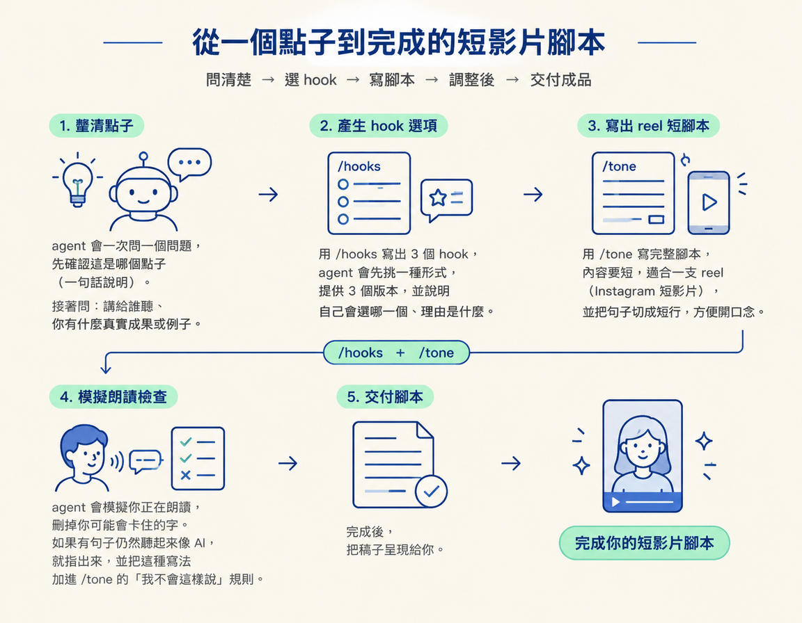

這一步接在點子整理與技能準備之後：輸入是一個點子、你要對誰說，以及一項真實成果或例子。輸出則是一份可以照著念的腳本。你會用 /hooks 寫出 3 個開場選項，再用 /tone 整理成符合你說話方式的完整稿。
前幾步已經準備好兩個零件：/hooks 負責影片開頭的 hook，也就是用來抓住觀眾注意力的開場。/tone 負責整段腳本的語氣。humanizer 則是用來減少 AI 腔的工具。現在要把這些零件接起來，拿一個點子走完整條流程，做出一份明天就能拿去錄的腳本。
最後你會先拿到 3 個 hook 選項，選定其中一個，再完成一份短到可以照著念的稿。講師指出，這是讓內容和上週貼文拉開差距的關鍵一步：同樣一個點子，經過這兩個 skill 處理，開頭和語氣都會更貼近你的需求。
/hooks 與 /tone。前者在上一個節點建立，後者則是在這一節前面的步驟準備好。這裡的分工很清楚：用 /hooks 想出影片開頭，再用 /tone 寫出後續內容。
We're just those two skills a way to come up with hooks and a way to come up with the script for the rest of your videos.
也就是說，影片腳本分成兩部分：開頭由 /hooks 負責，其餘內容由 /tone 負責。因此課程建議兩個 skill 都準備好，接著串在一起使用，而不是二選一。
課程提供了一段用來撰寫 Instagram 短影片的完整 prompt。把整段貼給 agent，再將其中的點子換成你自己的：
"""Write a script for an Instagram short, in my voice. 1. Ask me these one at a time and wait for each answer: which of my ideas this is (in one sentence), who it's for, and what real result or example I have (never make one up). 2. Use my /hooks skill to pick a hook shape and write 3 hooks in it. Tell me which one you'd pick and why, and let me choose. 3. Write the script with my /tone skill, short enough for a reel, in short lines I can say out loud. 4. Read it back as if I'm saying it out loud and cut any word I'd stumble on. If a line still sounds like AI, tell me, and add that pattern to /tone as something I never say. 5. Show me the script."""
這段 prompt 把流程中的問題和選擇一一排好。看看 agent 會依序做什麼：
never make one up 的意思是「絕不編造」。/tone 的「我不會這樣說」規則。
講師反覆提醒，寫稿時要套用自己的品味，並根據所在行業調整內容（applying your own taste based on your own industry）。工具提供的是骨架。哪些內容適合你的領域、哪些話像你平常會說的，仍要由你判斷。
「真實成果」尤其重要。Agent 不知道你這個月做過什麼、幫誰解決過什麼問題，所以 prompt 會直接問你，並禁止它自己編造。請用真實資料填入腳本，留意以下界線：
| 可以放進腳本 | 絕對不能捏造 |
|---|---|
| 你真的做過的專案、親身踩過的坑 | 聽起來很厲害、但你根本沒做過的案例 |
| 客戶或讀者真的提出過的問題 | 編造的資料、成效或使用者數量 |
| 你親眼觀察到的業界現象或趨勢 | 隨口引用、卻查不到來源的「研究」 |
左欄的經驗讓內容有自己的特色，因為那是你親身經歷、能具體說明的事。若把右欄的內容編進腳本，問題就不只是聽起來像 AI，而是變成不誠實，這比有 AI 腔更難補救。
Prompt 第 4 條的品管方式很直接：把腳本當成你正在說話，念過一遍，刪掉任何會讓你卡住的詞。這樣一來，判斷標準就不只是「句子寫得好不好」，還包括「你是不是真的講得出口」。
腳本裡的字即使都用得正確，只要某句話讓你念到一半打結，或讓你覺得「我平常根本不會這樣講」，它就還不是一份適合照讀的稿。錄影前先把這些句子修掉。如果念起來仍然像 AI，就把那種寫法記進 /tone，讓下次生成時避開。
要做出一份可以照讀的稿，先選一個點子，再貼上課程提供的 Instagram 短影片 prompt。讓 agent 一次問一個問題，確認點子、對象和真實成果。接著用/hooks寫出 3 個開場選項，讓你挑選，再用/tone寫成短句腳本。最後念過一遍，刪掉會卡住的字，並把仍然像 AI 的寫法加進/tone。工具提供骨架，行業判斷和真實經驗則由你補上。
完成後，你會有一份從點子出發、選好 hook、再整理成可照讀腳本的成品。接下來要做最後一步：每次 session 結束後，把這次收到的 feedback 寫回 skill，讓它下次更貼近你的習慣。